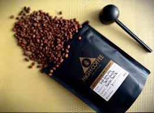
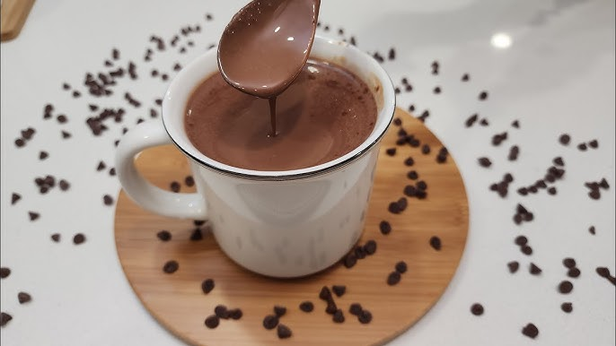
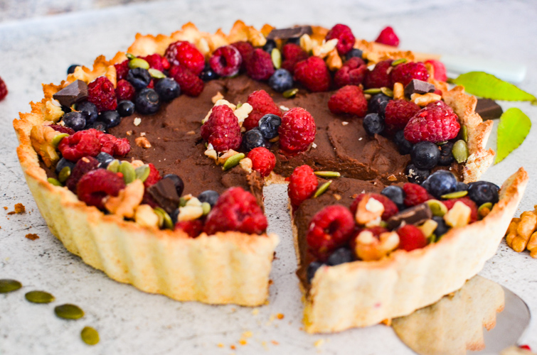
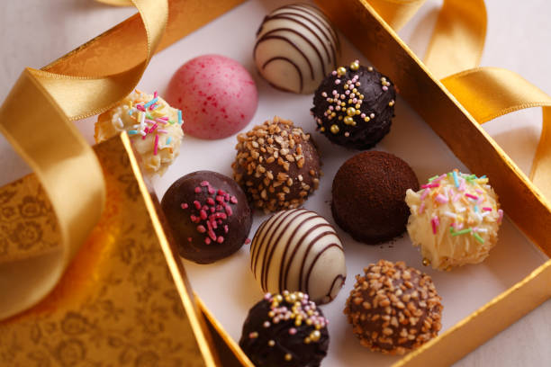

Conoce sobre Chococafé
En ChocoCafé celebramos el auténtico sabor del Perú a través del chocolate artesanal y el café de especialidad para llevar a casa. Somos un espacio dedicado a los amantes del buen gusto, donde puedes descubrir productos elaborados con dedicación, origen y mucha identidad peruana.
Carta
-
Café Artesanal de Cusco
Café de especialidad 100% peruano, seleccionado de fincas sostenibles en Cusco. Disfrútalo en métodos filtrados como V60 o Chemex, donde resaltan sus notas florales, frutales y un cuerpo suave. Perfecto para paladares que aprecian el café en su estado más puro.

-
Chocolate Caliente Ayacuchano
Espeso, aromático y reconfortante. Elaborado con chocolate artesanal de Ayacucho, esta bebida tradicional se prepara con leche entera o vegetal, realzando el sabor intenso del cacao peruano. Endulzado suavemente con panela.

-
Tarta de Cacao Chuncho con Frutos Rojos
Un postre de autor. Base de tarta crujiente con ganache de chocolate chuncho (origen Cusco, 75% cacao), coronado con frutos rojos frescos. Equilibrio perfecto entre dulzor, acidez y profundidad de sabor.

-
Espresso Doble Andino
Corto, intenso y lleno de carácter. Nuestro espresso está hecho con una mezcla exclusiva de granos del norte del Perú (Cajamarca y Amazonas), tostados localmente para preservar su frescura. Ideal solo o como base para capuchinos.

-
Bombones Artesanales
Mini joyas de chocolate rellenas con ingredientes peruanos: maracuyá, café, lúcuma y maní crocante. Hechos a mano por chocolateros locales. Una experiencia que despierta todos los sentidos.
